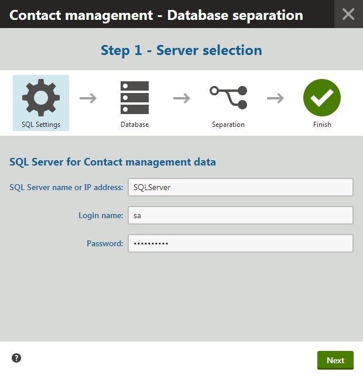
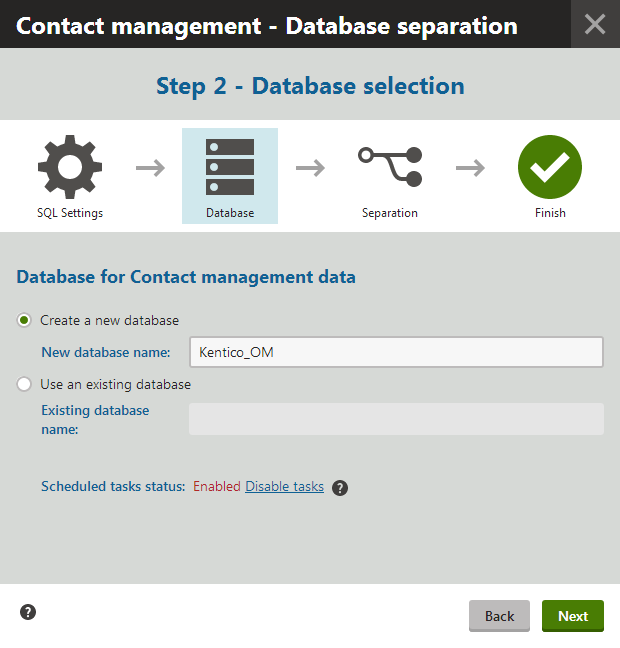

Separating the contact management database
When using contact management on high‑traffic websites, the system needs to store a very large volume of data in order to keep records of all contacts, their activities and other related information. This may complicate database administration and make it difficult to perform regular backups. For these reasons, Kentico provides a way to move all tables and database objects associated with contact management to a separate database (including the currently stored data). Doing so allows easier management of the application's main database, without the need to deal with the contact data.
There can only be one separated contact management database for the entire system, even when hosting multiple websites. It is not possible to create a different database for each site.
When should you use a separate contact management database?
When the amount of data stored in the contact management tables is too large to back up in the same interval as the main database.
When not to use a separate contact management database?
If you don't store a large amount of data in the contact management database tables.
If you don't plan on backing up your main database in frequent intervals.
Tables affected by contact management database separation
The separation procedure affects the following database tables:
CMS_Consent
CMS_ConsentArchive
CMS_ConsentAgreement
Newsletter_ClickedLinks
Newsletter_IssueContactGroup
Newsletter_Link
Newsletter_OpenedEmail
OM_Account
OM_AccountContact
OM_AccountStatus
OM_Activity
OM_ActivityRecalculationQueue
OM_ActivityType
OM_Contact
OM_ContactGroup
OM_ContactGroupMember
OM_ContactChangeRecalculationQueue
OM_ContactRole
OM_ContactStatus
OM_Membership
OM_Rule
OM_Score
OM_ScoreContactRule
OM_VisitorToContact
Personas_Persona
Personas_PersonaContactHistory
Kentico EMS required
Features described on this page require the Kentico EMS license.
Running the database separation
Use the following steps to separate the system's contact management data into a different database.
Warning
It is strongly recommended to back up your database before starting the separation.
The database will be unavailable while the separation is being carried out, so you should run the process at a time when no visitors or editors are accessing the websites in the system.
You cannot perform database separation if you use Integrated Windows authentication on your SQL Server.
Database separation on Amazon RDS
Separating the contact management database on Amazon RDS is not supported.
Database separation on Microsoft Azure
If your SQL database is hosted on Microsoft Azure, you need to manually perform some parts of the procedure:
Create a new database before you launch the separation. The process cannot automatically create the separated database.
Move data to the separated database. The process does not move the data, it only creates the database structure.
Delete the separated tables from the original database.
Configure your Azure project to contain a connection string to the separated database. You can either:
Add a new <Setting name="CMSOMConnectionString" value="..." /> setting to your project's ServiceConfiguration.Cloud.csdef file.
– or –Add a new <add name="CMSOMConnectionString" connectionString="..." /> key to your project's web.config file.
Open the System application.
Select the DB separation tab and click Separate contact management database.
This starts the database separation wizard.
Specify the SQL server to which you wish to transfer the contact management database and enter the connection credentials.
You can identify the server through its name or IP address.
It is possible to use a different server than the one containing the main database.
The separated database may be hosted on all server types supported by Kentico.

Specifying a server that will host the separated databaseContinue by clicking Next.
In Step 2, choose to either:
Create a new database for the contact management DB objects and data
Import the DB objects and data into an existing database on the server specified in the previous step.
Make sure the existing database does not contain any of the tables that are included in the separation. See the top of the topic for a list.
Make sure the existing database is case insensitive.
Type the name of the target database into the appropriate field.
Click Disable tasks.
You need to prevent all scheduled tasks in the system from running, because the database will be unavailable during the separation process. If a task is currently being executed when you click the button, the disabling action waits until the task is finished. The tasks will automatically be enabled again when the separation is completed.

Specifying a database to separate intoClick Next to begin the separation.
The wizard displays a log while the database operations are being performed.
During this stage, all websites in the system are temporarily switched to Off-line mode.
Any regular visitors who arrive at this time see a message informing that the site is down due to maintenance. For users with the Global administrator privilege level, the system shows the current state of the separation wizard.
When the process is completed, all contact management data is transferred to the new database. If you view your application's web.config file, you can notice that an additional connection string for the new contact management database is now present in the <connectionStrings> section:
<add name="CMSOMConnectionString"connectionString="..."/>Click Finish in the final step of the wizard.
The on-line marketing data is removed from the application's main database (including the database table structure and other related objects).
The system brings all websites back on-line and enables the inactive scheduled tasks.
Database separation on web farms
If your application is running on multiple servers in a Web farm environment, you need to manually copy the CMSOMConnectionstring key into the web.config files of all other servers, otherwise they will not be functional.
Result
The new database status is reflected on the General tab of the System application, in the Database information section.
All functionality of the website and administration interface remains the same as before the separation.
If you wish to reverse the process and return everything back to a single database, follow the instructions in Rejoining the contact management database.
Querying data from separated databases on Azure SQL
If you are using a Microsoft Azure SQL database and wish to run custom queries that load data from a separated database, you need to utilize elastic queries (cross-database querying):
Set up a database scoped master key and credentials.
Define an external data source for the separated database.
Create external tables for every table that you wish to use in your queries.
Load data from the appropriate external tables in the code of your queries.
For detailed information, see the Query across cloud databases article.